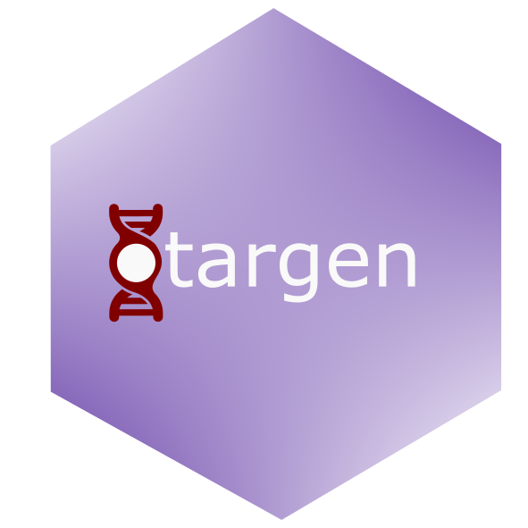

|
|
 |
Unified Access to Open Targets Platform Data 🔍
otargen is an open-source R package that provides a streamlined and tidy interface for retrieving and analyzing drug target data from Open Targets Platform. It enables researchers to access gene-disease associations, target safety, tractability, evidence types, and more — all within the R environment.
📣 otargen 2.0.0 — Major Release
🚨 Important Notice: Following Open Targets’ announcement, Open Targets Genetics has been officially merged into the Open Targets Platform API. Consequently, otargen 2.0.0 represents a complete overhaul of the package’s functionality to support this unified API endpoint and schema.
🆕 What’s New in 2.0.0
- 🔁 Unified API Integration: Full migration from the deprecated Open Targets Genetics GraphQL API to the new Platform GraphQL API.
- 🔍 Expanded Query Support: Includes all major data types now available in the merged schema.
- 📘 Updated Documentation: All help files and vignettes have been rewritten to reflect new function usage.
- 📄 New Example Articles: Learn to use the new API queries with fresh, practical use cases.
⚠️ Deprecation process:
The redanndant query functions from version 1.1.5 are deprecated in 2.0.0. However, we will keep the queries and plotting functions that still provide useful data as long as supported in the backend API.
👉 We highly recommend upgrading to 2.0.0 by installing it from CRAN or GitHub.
Installation
From CRAN:
install.packages("otargen")From GitHub (development version):
if (!require("devtools")) install.packages("devtools")
devtools::install_github("amirfeizi/otargen")🧪 Examples of New Queries
Here are a few examples of the new query functions in otargen 2.0.0:
# Retrieve GWAS credible set data
result <- gwasCredibleSetsQuery(ensemblId = "ENSG00000105397", efoId = "EFO_0000685", size = 500)
# Retrieve ChEMBL data for a specified gene and disease.
result <- chemblQuery(ensemblId = "ENSG00000080815", efoId = "MONDO_0004975", size = 10)
# Retrieve Pharmacogenomics data for a specified drug.
result <- pharmacogenomicsChemblQuery(chemblId = "CHEMBL1016")
# Retrieve ClinVar data for a specified gene and disease.
result <- clinVarQuery(ensemblId = "ENSG00000080815", efoId = "MONDO_0004975", size = 10)
# Retrieve Safety Liabilities data for a specified gene
result <- safetyQuery(ensgId = "ENSG00000141510")
# Retrieve UniProt Variants data for a specified variant.
result <- uniProtVariantsQuery(variantId = "4_1804392_G_A")(Refer to ?gene_disease_associations_query and other help files for full parameter lists and example outputs.)
Citing otargen
Please cite otargen if you use it in your research:
📄 Feizi & Ray, Bioinformatics
GitHub: otargenpy on GitHub
Features
- ⚡ Fast, declarative API querying
- 🧭 Schema-aware helpers for key data types
- 📊 Built-in visualizations
- 📚 Example vignettes and reproducible workflows
Join the Community
Visit the GitHub repo: https://github.com/amirfeizi/otargen
We welcome contributions, issue reports, and feedback!